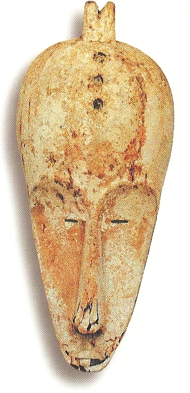
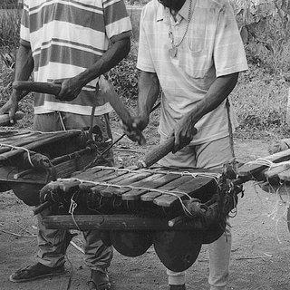

L’origine du peuple Fang est l’un des sujets les plus étudiés en Afrique centrale. Selon les chercheurs et les traditions orales, les Fang seraient un peuple bantu qui a migré depuis la région du nord-est de l’actuel Cameroun et du sud du Tchad. À partir de plusieurs siècles de déplacements progressifs, ils se sont installés au Cameroun, en Guinée équatoriale et au Gabon, où ils constituent aujourd’hui l’un des groupes ethniques les plus importants.
Cette migration, motivée par la recherche de terres fertiles, de sécurité et de meilleures conditions de vie, a conduit les Fang à traverser forêts, savanes et fleuves. Leur organisation sociale est restée fortement structurée autour de la famille, du clan et des ancêtres, ce qui explique la place centrale du culte des ancêtres et des rites initiatiques (comme le Bwiti). Leur tradition orale raconte qu’ils sont un peuple voyageur, uni et courageux, ayant su s’adapter à chaque nouvelle terre qu’ils ont rencontrée.
La lamgur Fang est parlée au Gabon, en Guinée équatoriale, au Cameroun et dans une moindre mesure au Congo, par plus d’un million de personnes. Riche et imagée, elle se caractérise par un vocabulaire profondément lié à la nature, aux valeurs communautaires et à la spiritualité.
Le fang se divise en plusieurs dialectes principaux – comme le Ntumu, le Mvaï, l’Okak ou encore l’Atsi – qui restent intercompréhensibles. Au-delà d’un simple moyen de communication, la langue fang est un vecteur culturel et identitaire : elle sert à transmettre les récits mythologiques, les proverbes, les chants et les enseignements des anciens. Aujourd’hui, bien que le français soit la langue officielle du Gabon, la langue fang demeure vivante et continue d’être parlée dans les foyers, lors des cérémonies traditionnelles et à travers la musique et la littérature.
L’art fang est profondément lié à la spiritualité et aux fonctions sociales. Chaque œuvre ou instrument a un rôle précis dans la vie communautaire.
Le Byeri est l’un des éléments spirituels et artistiques les plus importants du peuple Fang. C’est un culte des ancêtres centré sur la vénération des reliques familiales (os, crânes, cheveux) soigneusement conservées dans des réceptacles spéciaux. Ces reliques étaient gardées dans des boîtes ou des paniers surmontés de statues en bois sculpté, représentant souvent un ancêtre idéalisé : visage serein, yeux grands ouverts, posture digne.
Le rôle du Byeri allait au-delà de la simple conservation : il servait de médiateur entre les vivants et les ancêtres, protégeant la famille, apportant fécondité, santé et prospérité. Lors des rituels, les Fang invoquaient les ancêtres à travers le Byeri pour obtenir des conseils, du courage ou une protection. Sur le plan artistique, les statues Byeri sont devenues des chefs-d’œuvre mondialement reconnus, admirés pour leur style équilibré et leur profondeur spirituelle.
Les masques Ngil sont parmi les plus célèbres du peuple Fang. Ils étaient utilisés par la société secrète du Ngil, une confrérie masculine chargée de maintenir l’ordre, purifier la communauté et juger les personnes accusées de sorcellerie. Ces masques, allongés et peints en blanc (symbole de pureté et du monde des esprits), avaient une fonction rituelle et judiciaire : ils inspiraient respect et crainte, car leur apparition marquait une justice implacable.
Avec leurs formes élancées, leurs yeux étroits et leur front haut, les masques Ngil sont aussi devenus des icônes de l’art africain traditionnel. Aujourd’hui, bien qu’ils ne soient plus utilisés dans les rituels, ils demeurent des symboles puissants de la culture Fang et sont exposés dans de nombreux musées du monde.
Chez les Fang, la musique et le chant occupent une place essentielle dans la vie sociale et spirituelle. Les instruments traditionnels, comme le mvet (cithare à cordes tendues sur une longue calebasse), le tambour et diverses harpes, accompagnent les récits, les danses et les cérémonies. Le mvet, en particulier, n’est pas seulement un instrument musical : c’est aussi un support de transmission du savoir, car il accompagne les longues épopées chantées qui relatent l’histoire, la cosmogonie et les valeurs morales du peuple Fang.
Les chants polyphoniques, souvent entonnés en groupe, renforcent la cohésion de la communauté et donnent une dimension sacrée aux rituels. Ils servent à invoquer les ancêtres, célébrer la vie, marquer les passages importants comme les initiations ou les mariages. Cette richesse musicale fait partie intégrante de l’identité Fang et continue d’inspirer la culture gabonaise contemporaine.
Chez les Fang, la religion traditionnelle reposait sur un lien fort avec les ancêtres, les esprits et la nature. Les rites, comme le Bwiti, rythmaient la vie spirituelle et permettaient d’assurer protection, guérison et transmission des valeurs. Ces pratiques donnaient un sens profond à la communauté et à la mémoire collective.
Cependant, avec l’arrivée du christianisme et l’influence coloniale, une grande partie de ces traditions a été délaissée ou transformée. Beaucoup de Fang se sont convertis au catholicisme ou au protestantisme, ce qui a affaibli la pratique des cultes ancestraux. Malgré cela, certaines familles et communautés cherchent aujourd’hui à préserver ou à redécouvrir leurs racines spirituelles, afin de concilier foi moderne et héritage culturel.